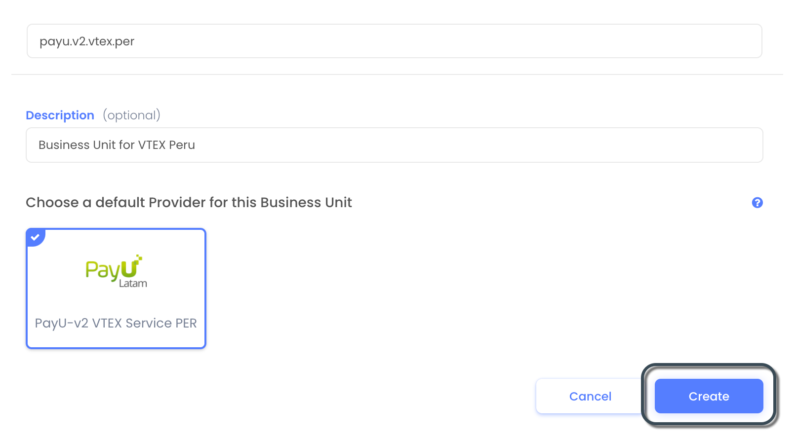
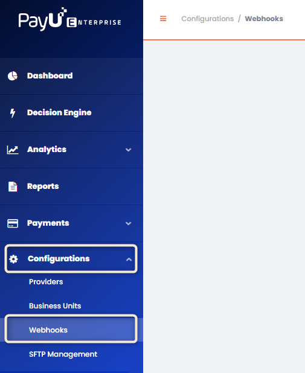
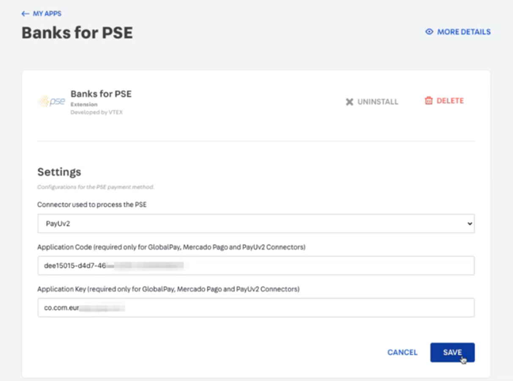
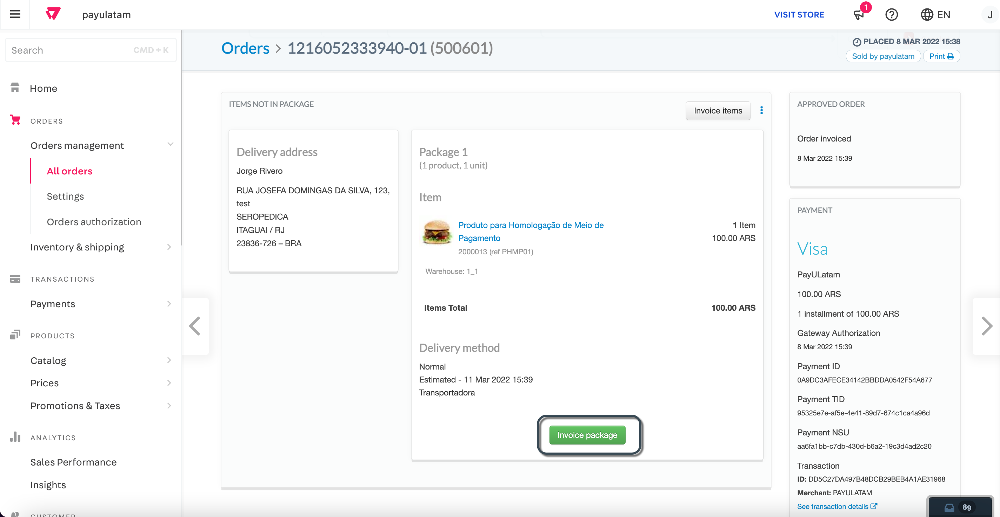
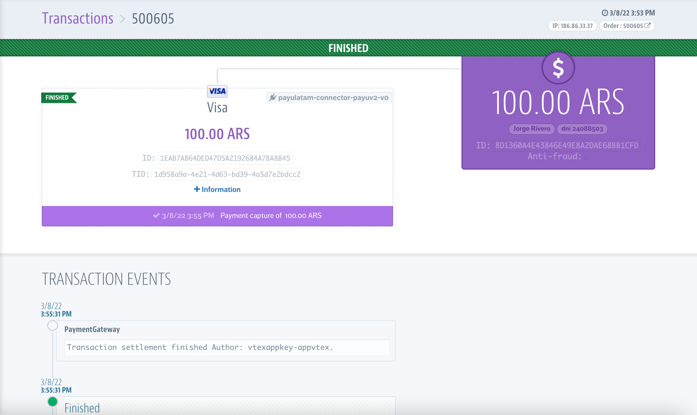

VTEX
A VTEX é uma plataforma de comércio digital empresarial que permite criar rapidamente uma loja online com recursos integrados. Para mais informações, visite o site oficial da VTEX.
Pré-requisitos
Antes de integrar o PayU com o VTEX, certifique-se de ter o seguinte:
- Uma conta PayU Latam ativa.
- Uma conta PayU Enterprise (PaymentsOS) ativa no modo de produção/ao vivo. Para mais detalhes sobre como ativá-la, consulte Ativando sua conta PayU Enterprise.
- Uma conta VTEX com direitos e permissões suficientes para acessar o painel administrativo da VTEX. Essa conta deve ter a autenticação de dois fatores ativada.
Disponibilidade por País e Métodos de Pagamento
A tabela abaixo mostra a disponibilidade da VTEX por país e os métodos de pagamento compatíveis:
| País | Cartões de Crédito | Pagamentos em Dinheiro | Outros Métodos |
|---|---|---|---|
 Argentina Argentina |
Cartões de crédito, Google Pay | Pagamentos em dinheiro | - |
 Brasil Brasil |
AMEX, MasterCard, Visa, Google Pay | Boleto Bancário | - |
 Colômbia Colômbia |
AMEX, Codensa, Diners, MasterCard, Visa, Google Pay | Efecty, Su Red, referência bancária | PSE, Nequi |
 Chile Chile |
Cartões de crédito, Google Pay | Pagamentos em dinheiro | - |
 México México |
Cartões de crédito, Google Pay | Pagamentos em dinheiro | SPEI |
 Peru Peru |
AMEX, MasterCard, Visa, Google Pay | - | Yape |
Ativando sua Conta PayU Enterprise (Modo Ativo)
Por padrão, novas contas são configuradas no modo de teste. Para habilitar transações ao vivo, entre em contato com seu gerente de conta e envie uma solicitação com os seguintes detalhes:
- Merchant ID: Localize o Merchant ID da sua conta LATAM no Painel de Gerenciamento do PayU.
- Account ID: Encontre seu Account ID no painel de controle do PayU Enterprise clicando no seu nome de usuário no canto superior direito.

Configurando sua Conta PayU Enterprise
Para configurar os métodos de pagamento na VTEX para processamento através do nosso gateway, siga os passos abaixo. A configuração consiste em duas etapas. Antes de prosseguir, certifique-se de ter atendido aos pré-requisitos mencionados acima.
1. Configuração Inicial
O PayU Enterprise opera através do PaymentsOS, que atua como middleware entre o PayU Latam e o VTEX. O primeiro passo é configurar os seguintes componentes dentro da sua conta PayU Enterprise:
- Configuração do provedor
- Unidade de negócios
- Webhook
Você pode configurar esses componentes utilizando um dos seguintes métodos:
- Configurando a conta usando o Postman.
- Configurando a conta manualmente pelo painel da PayU Enterprise.
Configurando a Conta Usando o Postman
Siga estas etapas para configurar sua conta usando o Postman:
- Clique no botão abaixo para importar nossa coleção do Postman (atualize a página se o botão não funcionar).
-
Após importar a coleção, defina as variáveis globais. Baixe o arquivo de variáveis globais aqui.
-
No Postman, clique em Import ao lado do nome do seu workspace e selecione o arquivo JSON baixado.
-
Clique em Import para finalizar o processo.
-
Execute os métodos da coleção na ordem exibida. Primeiro, selecione o método
POSTchamado1. Logine, em seguida, vá até a aba Body.

-
Insira seu e-mail e senha da sua conta PayU Enterprise e clique em Send. Se o login for bem-sucedido, os dados de autenticação serão definidos para o próximo método.
-
Clique no método
GET2. Retrieve PayU Latam ID. -
No canto superior direito, clique no ícone de olho para localizar o parâmetro
env. Clique no ícone de lápis e defina-o comotestpara ambiente de teste oulivepara produção.

-
Clique em Send para continuar.
-
Em seguida, configure o provedor, que armazena suas credenciais de processamento de pagamento. Selecione o método
POST3. Create Provider Configuratione vá até a aba Body.

Preencha os seguintes detalhes:
| Parâmetro | Descrição |
|---|---|
| name | Insira um nome para a configuração do provedor. |
| description | Forneça uma descrição opcional. |
| configuration_data.apiLogin | Nome de usuário ou login fornecido pela PayU. Como obter meu API Login |
| configuration_data.apiKey | Chave única do seu comércio. Como obter minha API Key |
| configuration_data.accountId | ID da conta PayU com base no seu país de operação. |
| configuration_data.merchantId | Seu ID de comércio no PayU Latam. |
| configuration_data.paymentCountry | País de processamento no formato ISO 3166 Alpha-3. |
| configuration_data.partnerID | Identificador da PayU. Insira ZOOZ_VTEX_V2. |
| configuration_data.cashRedirect | Defina como true para garantir o fluxo adequado de pedidos com pagamentos em dinheiro na VTEX. |
Nota
O parâmetroprovider_id é atribuído automaticamente pela resposta do método 2. Retrieve PayU Latam ID. Não modifique esse valor.
- Configure a unidade de negócios, que vincula a configuração do provedor com as credenciais da API PayU Enterprise para processar transações. Selecione o método
POST4. Create Business Unite, em seguida, navegue até a aba Body.

Preencha os seguintes detalhes:
| Parâmetro | Descrição |
|---|---|
| id | Identificador da unidade de negócios (minúsculas, sem espaços). Este valor não pode ser alterado posteriormente, portanto, garanta a precisão. |
| description | Descrição opcional. |
Nota
O parâmetrodefault_processor é atribuído automaticamente pela resposta do método 3. Create Provider Configuration. Não modifique esse valor.
- Crie o webhook, que recebe notificações da VTEX quando o status de uma transação muda. Selecione o método
POST5. Create Webhooke, em seguida, navegue até a aba Body.

Defina o parâmetro endpoint com base no seu ambiente:
- Teste:
https://sandbox.api.payulatam.com/vtex-payments-integration/paymentsos/webhook - Produção:
https://api.payulatam.com/vtex-payments-integration/paymentsos/webhook
Mantenha todos os outros parâmetros com seus valores padrão.
Neste ponto, sua conta PayU Enterprise usando PaymentsOS está configurada. O próximo passo é Configurar o Provedor VTEX.
Configurando a Conta Usando o Painel PayU Enterprise
Siga estas etapas para configurar sua conta usando o painel PayU Enterprise.
- Criar a Configuração do Provedor
Um provedor armazena suas credenciais de processamento de pagamento. Siga estas etapas para configurar um:
1.1 No painel do PayU Enterprise, navegue até Configurations > Providers.

1.2 Clique no módulo correspondente ao país ou divisão que você está configurando.
1.3 Preencha os seguintes campos:
| Campo | Descrição |
|---|---|
| Nome da Configuração | Insira um nome para a configuração do provedor. |
| Descrição | Forneça uma descrição opcional. |
| apiLogin | Nome de usuário ou login fornecido pelo PayU. Como obter meu API Login |
| apiKey | Chave única do seu comércio. Como obter minha API Key |
| accountId | ID da conta PayU com base no seu país de operação. |
| merchantId | Seu ID de comércio no PayU Latam. |
| paymentCountry | País de processamento no formato ISO 3166 Alpha-3. |
| cashRedirect | Selecione true para garantir o fluxo correto de pedidos com pagamentos em dinheiro na VTEX.Nota: Essa configuração é essencial para comerciantes que processam pagamentos em dinheiro na VTEX. |
1.4 Clique em Create.

- Criar a Unidade de Negócios
Uma unidade de negócios vincula a configuração do provedor com as credenciais da API do PayU Enterprise para processar transações. Siga estas etapas:
2.1 No painel, vá para Configurations > Business Units.

2.2 Clique em Create Business Unit e insira:
| Campo | Descrição |
|---|---|
| Business Unit Name | Deve estar em minúsculas e não conter espaços. Este valor não pode ser alterado posteriormente, portanto, garanta a precisão. |
| Description | Descrição opcional. |
2.3 Na seção Choose a Default Provider for This Business Unit, selecione a Provider Configuration criada na Etapa 1. Depois, clique em Create.
- Criar o Webhook
O webhook recebe notificações do VTEX quando o status de uma transação muda. Siga estas etapas:
3.1 No painel, navegue até Configurations > Webhooks.
3.2 Clique em Create a Webhook Endpoint e insira a URL apropriada com base no seu ambiente:
- Teste:
https://sandbox.api.payulatam.com/vtex-payments-integration/paymentsos/webhook - Produção:
https://api.payulatam.com/vtex-payments-integration/paymentsos/webhook
3.3 Na tabela Payment Event Alerts, ative o controle deslizante Update para Authorization e Charge. Em seguida, no campo Associated Business Units, insira a Business Unit criada na etapa anterior. Por fim, clique em Create.

Neste ponto, sua conta PayU Enterprise usando PaymentsOS está totalmente configurada. O próximo passo é configurar o provedor VTEX.
2. Configurando o Provedor VTEX
Depois de configurar sua conta PayU Enterprise, o próximo passo é configurar o provedor VTEX para cada método de pagamento. Para prosseguir, você deve ter uma conta de usuário válida para acessar o admin da VTEX.
Criando um Novo Provedor
Nota
Antes de criar o novo provedor, certifique-se de ter configurado o fingerprint para a PayU. Para isso, consulte este guia.- Faça login no painel de administração VTEX e vá para Configurações da Loja > Provedores > Novo Provedor:
- Localize PayU e selecione PayUv2:

Importante
Certifique-se de selecionar PayUv2, pois este guia se aplica especificamente a essa versão.- Preencha o seguinte formulário:

Nota
As informações do provedor podem ser obtidas a partir de:
- Coleção do Postman: Execute o método Retrieve Authentication Keys, configurando o parâmetro global
envcomotestoulive, dependendo do ambiente de processamento. - Painel PayU Enterprise: Navegue até Account > Business Units e selecione a Unidade de Negócio criada em Configurando sua Conta PayU Enterprise. Use o seletor no topo para escolher o ambiente de processamento.
Alguns valores estão ocultos por padrão; clique no ícone de olho para revelá-los.
| Campo | Descrição |
|---|---|
| App key | ID do aplicativo da Unidade de Negócio. |
| App token | Chave API privada da Unidade de Negócio. |
| Name | Nome usado para identificar a afiliação ao Gateway. |
| Enable test mode | Marque esta opção para realizar transações de teste. |
| Automatic settlement | Escolha como capturar (cobrar) os pagamentos:
Para mais detalhes, consulte Funcionalidade de Captura Automática Personalizada. O prazo padrão para captura automática é de sete (7) dias após a aprovação. |
| Enable payout split and send payment recipients? | Selecione No. |
| Tipo Autorizacion | Escolha entre fluxos de pagamento de uma ou duas etapas:
Consulte Fluxos de pagamento para mais informações. |
| Tipo de devolución | Determina como o reembolso é processado quando uma devolução é iniciada a partir do VTEX:
|
| Public Key | Chave API pública da Unidade de Negócio. |
| Idioma | Selecione o idioma para a emissão do pedido. Idiomas compatíveis:
|
| Expiración pago (días) | Define o período de validade para pagamentos em dinheiro. Importante: Este valor deve coincidir com o campo Validade do pagaré na seção Configuração de métodos de pagamento em dinheiro. |
- Clique em Salvar para concluir a configuração.
Configurando Capturas em um Fluxo de Duas Etapas
Esta seção explica como capturar pedidos autorizados no VTEX V2 usando um fluxo de pagamento em duas etapas (autorização seguida de captura). Inclui um guia passo a passo para capturar o valor total ou parcial de um pedido.
Pré-requisitos
Antes de capturar pedidos, certifique-se de que as seguintes configurações estejam corretas:
- Configuração da Conta PayU: Sua conta PayU deve estar habilitada para processamento em duas etapas. Para mais informações sobre como ativar esse fluxo de pagamento, entre em contato com seu representante de vendas da PayU.
- Afiliação de Pagamento na VTEX (PayUv2): A afiliação do provedor PayUv2 na VTEX deve estar configurada para o processamento em duas etapas, que envolve autorização seguida de liquidação (captura).
- Liquidação automática: Definida como
Desativado. - Tipo de autorização: Definido como
Pré-autorização.
- Liquidação automática: Definida como
Observação
Se você não pretende capturar valores menores ou maiores do que o valor originalmente autorizado, pode ativar a Liquidação automática para capturar o pedido imediatamente após a autorização ou agendar a captura definindo um intervalo de tempo em horas.- Condição de Pagamento: Verifique se a condição de pagamento relevante está habilitada com a afiliação PayUv2.
Iniciando uma Captura
Quando um pedido tiver uma autorização aprovada, siga estes passos no seu painel da VTEX:
- Acesse o Pedido: Abra o painel administrativo da VTEX e selecione o pedido autorizado.
- Atualize o Status do Pedido:
- Se o status do pedido estiver como “Janela de cancelamento”, clique no botão “Pronto para manuseio” para atualizá-lo.
- Em seguida, atualize o pedido usando a opção “Iniciar manuseio”.
Após completar essas etapas, o status do pedido mudará para “Em manuseio”, indicando que está pronto para ser capturado. Você poderá então capturar o valor total ou um valor modificado (menor ou maior).
Capturando o Valor Total
Para capturar o valor total autorizado:
- Selecione a opção Nota fiscal no pedido.
- Escolha Enviar nota fiscal única.
- Insira o número da nota fiscal na seção de detalhes.
- Clique em Salvar nota fiscal.
Ao concluir, o processo de liquidação será finalizado e o valor total autorizado do pedido será capturado.
Capturando um Valor Menor ou Maior
A VTEX oferece duas maneiras de capturar um valor diferente da autorização original:
A) Alterando os Itens do Pedido
Esse método permite ajustar os itens do pedido para refletir o valor desejado para captura.
- Acesse a seção faturamento pendente dentro do pedido.
- Selecione a opção Alterar itens.
- Ajuste os Itens:
- Para capturar um valor menor, reduza a quantidade de itens existentes ou remova-os.
- Para capturar um valor maior, aumente a quantidade de itens ou adicione novos.
- Finalize a Captura:
- Após modificar os itens, selecione a opção Nota fiscal no pedido.
- Escolha Enviar nota fiscal única.
- Insira o número da nota fiscal nos detalhes.
- Clique em Salvar nota fiscal.
Essa ação completará a liquidação e a integração capturará o valor modificado.
B) Alterando o Valor Final do Pedido
Esse método permite ajustar diretamente o valor total do pedido.
- Acesse o pedido e selecione a opção Alterar valor final.

- Ajuste o Valor:
- Para capturar um valor menor, insira o valor que deseja descontar do total.
- Para capturar um valor maior, insira o valor pelo qual deseja aumentar o pedido.
- Finalize a Captura:
- Após modificar o valor, selecione a opção Nota fiscal no pedido.
- Escolha Enviar nota fiscal única.
- Insira o número da nota fiscal nos detalhes.
- Clique em Salvar nota fiscal.
Isso concluirá a liquidação na VTEX.
Entendendo as Transações da PayU após a Captura
Veja como as transações aparecerão na PayU com base nas suas ações de captura:
- Captura do Valor Total (Sem Ajuste): Se você não ajustou o valor do pedido, verá duas transações na PayU: uma autorização e uma captura do valor total.
- Captura de Valor Menor: Se você ajustou o pedido para capturar um valor menor, verá duas transações na PayU: uma autorização e uma captura parcial.
- Captura de Valor Maior: Se o valor capturado for maior, verá quatro transações: a autorização inicial e sua captura, além de uma autorização adicional para o valor excedente e sua respectiva captura.
Configurando Métodos de Pagamento
Configure os métodos de pagamento que serão exibidos no site durante o checkout. Veja os métodos de pagamento disponíveis.
Importante
- As alterações nas condições de pagamento podem levar até 10 minutos para serem refletidas no fluxo de checkout.
- O PIX não está disponível para o Brasil ao usar a VTEX.
Configurando Cartões de Crédito ou Débito
Dependendo do seu país de processamento, você pode configurar a afiliação criada para usar cartões de crédito ou débito*. Siga as etapas abaixo para adicionar esse método de pagamento à sua loja VTEX.
* A disponibilidade de cartões de débito depende do seu país de processamento.
Importante
Clique aqui para saber como configurar cartões Co-branded ou Private Label.-
Faça login no painel de administração VTEX e vá para Transações > Pagamentos > Configurações.
-
Selecione a guia Condições de Pagamento e clique no ícone de adição.
- Selecione o método de pagamento que deseja adicionar. Os métodos de pagamento são agrupados por tipo.
Para este exemplo, selecionamos American Express na seção de Cartão de Crédito.
- Forneça os seguintes detalhes:
- Nome da Regra (para identificação rápida): Insira um nome descritivo para a condição de pagamento.
- Status: Defina o status da condição de pagamento. Você pode ter apenas uma condição de pagamento ativa por método de pagamento.
- Processar com afiliação: Selecione a afiliação do gateway configurada anteriormente.
- Pagamento à vista ou parcelado?: Selecione À vista.
- Clique em Salvar. A nova condição de pagamento agora será listada na guia Condições de Pagamento.
Configurando Cartões Co-Branded ou Private Label
Os cartões co-branded e private label são cartões de crédito emitidos por uma loja ou marca, às vezes em parceria com redes como AMEX, VISA ou MasterCard. Siga estas etapas para adicionar esse método de pagamento à sua loja VTEX.
-
Faça login no painel de administração VTEX e vá para Transações > Pagamentos > Configurações.
-
Selecione a guia Pagamentos customizados.
- A guia Pagamentos customizados fornece cinco (5) espaços para configurar cartões co-branded e private label. Neste exemplo, configuramos o cartão colombiano Codensa, que é um cartão private label.
Clique em qualquer caixa disponível na seção Cartões da Loja (Bandeira Própria).

- Insira os seguintes detalhes do cartão, mantendo o formato exato:
- Nome:
Codensa. - Descrição:
Codensa - Intervalos de BIN:
590712-590712 - Código de pagamento do adquirente:
codensa
Nota
Para cartões co-branded, você também deve selecionar a bandeira do cartão.Use a tabela abaixo para configurar cartões co-branded e private label. Você pode deixar os valores restantes com suas entradas padrão.
| País | Nome | Descrição | Intervalos de BIN | Código de pagamento do adquirente |
|---|---|---|---|---|
|
Argencard | Argencard | 501105-532362 |
argencard |
|
Cabal | Cabal | 60423,60400,589657 |
cabal |
|
Cencosud | Cencosud | 603493-603493 |
cencosud |
|
Naranja | Naranja | 589562 |
naranja |
|
Shopping | Shopping | 603488 |
shopping |
|
Codensa | Codensa | 590712-590712 |
codensa |
Para mais detalhes sobre a configuração de cartões co-branded e private label, visite o VTEX Help Center.
- Clique em Salvar. Após criar o pagamento personalizado, você será redirecionado para a opção de criar uma Condição de Pagamento. Siga as instruções na seção Configurando Cartões de Crédito ou Débito para concluir esta etapa.
Configurando o Google Pay
O Google Pay é uma carteira digital que permite que os clientes realizem transações de forma rápida e segura utilizando os cartões salvos em suas contas do Google. Integrar o Google Pay à sua loja VTEX por meio da PayU ajuda a melhorar a experiência de compra, reduzir a fricção no checkout e aumentar as taxas de conversão.
Nota
Quando os clientes pagam com Google Pay, a PayU processa a transação como um pagamento padrão com cartão de crédito ou débito, dependendo do tipo de cartão. Nenhuma taxa adicional será aplicada além das já acordadas.Pré-requisitos:
- Verifique se o Google Pay está ativo na sua conta PayU. Se tiver dúvidas sobre este requisito, entre em contato com o seu executivo de contas da PayU ou envie um e-mail para tecnico.co@payu.com, informando que você é um lojista VTEX solicitando a ativação do Google Pay.
- Os pagamentos com cartão devem estar habilitados na configuração da sua loja VTEX.
- A PayU deve estar configurada como o provedor de pagamento para as transações com cartão de crédito na sua loja VTEX.
Passo a passo:
-
Faça login no painel de administração VTEX e vá para Configurações da Loja > Carteiras Digitais.
-
Encontre a opção do Google Pay e ative a chave deslizante.
-
Quando solicitado, confirme a ativação clicando em Ativar.
Após a ativação, o Google Pay estará disponível como uma opção de pagamento no checkout da sua loja. Pode levar até 10 minutos para o método aparecer.
Para mais informações e boas práticas, consulte o guia oficial da VTEX sobre como ativar carteiras digitais no Centro de Ajuda da VTEX.
Configurando Métodos de Pagamento em Dinheiro
Como os pagamentos em dinheiro exigem que os clientes efetuem o pagamento em locais físicos, você pode configurar esse método de pagamento na VTEX como notas promissórias (Notes Payables).
Ao configurar um método de pagamento em dinheiro, os clientes são redirecionados para o checkout da PayU, onde podem baixar o comprovante de pagamento e pagá-lo no local físico correspondente. Siga as instruções abaixo para adicionar esse método de pagamento à sua loja VTEX.
Considerações:
- Certifique-se de que todos os meios de pagamento que você pretende configurar estejam habilitados na sua conta PayU, e que os nomes correspondam exatamente aos registrados na PayU. Métodos inativos ou com nomes incorretos podem causar falhas nas transações. Se precisar de ajuda para habilitar meios de pagamento ou carteiras específicas, entre em contato conosco.
- Para o Boleto Bancário no Brasil, este procedimento não é necessário. Basta localizar e configurar este meio de pagamento como uma condição de pagamento.
Passo a Passo:
-
Faça login no painel de administração VTEX e vá para Transações > Pagamentos > Configurações.
-
Selecione a guia Pagamentos customizados.
- Nesta guia, há cinco (5) espaços disponíveis para configurar métodos de pagamento em dinheiro. Neste exemplo, configuraremos o OXXO, um método de pagamento em dinheiro do México.
Clique em qualquer caixa disponível na seção Promissórias.

- Forneça as seguintes informações:
- Nome: Use o valor listado aqui na coluna
parâmetro paymentMethod. Para este exemplo, insiraOXXO.- Descrição: Insira uma descrição para exibição quando o cliente selecionar esse método de pagamento (opcional).
- Data de Expiração da Nota Promissória: Especifique o número de dias antes do vencimento do pagamento em dinheiro. O padrão é 7 dias. Certifique-se de que esse valor corresponde à configuração Expiração do Pagamento (dias) configurada na afiliação da VTEX para evitar problemas de processamento.
Deixe os demais campos com seus valores padrão.
- Clique em Salvar. Depois que o pagamento personalizado for criado, você será redirecionado para configurar uma nova Condição de Pagamento. Siga as instruções na seção Configurando Cartões de Crédito ou Débito.
Configuração do Nequi
Adicionar Nequi como método de pagamento permite que sua empresa alcance milhões de usuários que preferem carteiras digitais, oferecendo uma forma de pagamento mais rápida, segura e conveniente. Isso pode ajudar a aumentar as vendas, fortalecer a fidelidade dos clientes e garantir transações seguras.
Antes de começar, certifique-se de que o Nequi esteja habilitado em sua conta PayU e que o nome do método de pagamento corresponda exatamente ao registrado na PayU. Qualquer divergência ou status inativo resultará em erros de transação. Se precisar de ajuda para habilitar o Nequi, por favor entre em contato conosco.
Passo a passo:
-
Acesse o painel de administração da VTEX e vá até Transações > Pagamentos > Configurações.
-
Selecione a aba Condições de Pagamento e clique no ícone de mais.
-
Procure por NequiPayu usando a barra de pesquisa e selecione-o para abrir a interface de configuração.
-
Na interface de configuração:
- Defina NEQUI como o nome da condição
- Escolha o provedor
- Habilite o método de pagamento
-
Clique em Salvar. Confirme que o Nequi aparece na aba Condições de Pagamento.
-
Uma vez configurado, o Nequi estará disponível como opção de pagamento no checkout da VTEX. Observe que pode levar até 10 minutos para que a opção fique visível.

Testes em Sandbox
Para obter informações sobre como simular transações do Nequi no ambiente Sandbox, consulte a documentação da API de Pagamentos.
Configuração do Yape
Adicionar Yape como método de pagamento permite que sua empresa se conecte a milhões de usuários no Peru que preferem carteiras digitais. Com o Yape, os clientes podem pagar de forma fácil e segura usando apenas o número de telefone — ajudando você a aumentar as vendas, atrair novos clientes e garantir transações confiáveis respaldadas pelo BCP (Banco de Crédito do Perú).
Considerações:
- Certifique-se de que o Yape esteja habilitado em sua conta PayU e que o nome do método de pagamento corresponda exatamente ao registrado na PayU. Qualquer divergência ou status inativo resultará em erros de transação. Se precisar de ajuda para habilitar o Yape, por favor entre em contato conosco.
- Verifique se sua loja VTEX foi criada com VTEX IO ou FastStore. Em seguida, instale o aplicativo Pop-up for Online Payment with Yape acessando a URL de configuração. Substitua
{vtexaccount}na URL abaixo pelo nome da sua conta VTEX (isto é, o subdomínio que você usa para acessar o painel de administração da VTEX):https://{vtexaccount}.myvtex.com/admin/apps/payulatam.yape-payment-app-payuv2@1.3.0/setup
Exemplo:
Se sua conta VTEX forpayulatam, a URL será:https://payulatam.myvtex.com/admin/apps/payulatam.yape-payment-app-payuv2@1.3.0/setup
Passo a passo:
-
Acesse o painel de administração da VTEX e vá até Transações > Pagamentos > Configurações.
-
Selecione a aba Condições de Pagamento e clique no ícone de mais.
-
Procure por YapePayu usando a barra de pesquisa e selecione-o para abrir a interface de configuração.
-
Na interface de configuração:
- Defina YAPE como o nome da condição
- Escolha o provedor
- Habilite o método de pagamento
- Clique em Salvar. Confirme que o Yape aparece na aba Condições de Pagamento.
- Uma vez configurado, o Yape estará disponível como opção de pagamento no checkout da VTEX. Observe que pode levar até 10 minutos para que a opção fique visível.
Testes em Sandbox
Para obter informações sobre como simular transações do Yape no ambiente Sandbox, consulte a documentação da API de Pagamentos.
Configurando PSE
Pré-requisitos:
- Este método de pagamento está disponível apenas para lojistas que processam pagamentos na Colômbia.
- Para oferecer PSE como método de pagamento, você deve instalar o Aplicativo PSE desenvolvido pela VTEX. Se ainda não o fez, acesse Configurações da Conta > Aplicações > App Store e procure por Bancos para PSE.
Se o aplicativo não estiver disponível na loja, você pode solicitar sua instalação à equipe da VTEX enviando um ticket para o Suporte VTEX. - Se você estiver utilizando uma integração VTEX Legacy, a VTEX precisará realizar uma configuração adicional antes que você possa configurar este método de pagamento. Entre em contato com seu representante VTEX ou solicite assistência via Suporte VTEX.
Nota
Para mais informações, consulte os seguintes recursos da VTEX:
Passo a Passo:
- Faça login no painel de administração VTEX e vá para Configurações da Loja > Pagamentos > Configurações > Condições de Pagamento. Em seguida, siga estas etapas:
1.1 Clique no botão +.
1.2 Na categoria Outros, localize PSE.
1.3 Preencha os seguintes campos:
• Nome da Regra: Insira um nome descritivo para identificar este método de pagamento.
• Processar com Afiliação: Selecione a afiliação do gateway configurada para processar pagamentos com PayUV2.
• Status: Ative a condição de pagamento.
1.4 Clique em Salvar para aplicar as configurações.
- Configure o aplicativo Bancos para PSE com suas credenciais da PayU seguindo estas etapas:
2.1 Faça login no painel de administração da VTEX e vá para Apps > Aplicativos Instalados > Banks for PSE.
2.2 Preencha o formulário e clique em Salvar.
| Campo | Descrição |
|---|---|
| Conector Utilizado para Processar o PSE | Selecione PayUv2 na lista suspensa. |
| Código da Aplicação | Insira a chave privada da Unidade de Negócios. Esta informação está disponível no Painel de Controle PayU Enterprise, conforme explicado aqui. Nota: Este campo corresponde ao Token de Aplicação da afiliação VTEX. |
| Chave da Aplicação | Insira o ID da Aplicação da Unidade de Negócios. Esta informação está disponível no Painel de Controle PayU Enterprise, conforme explicado aqui. Nota: Este campo corresponde à Chave da Aplicação da afiliação VTEX. |

- Após concluir a configuração, você poderá processar transações em ambiente de produção com PSE.
Importante
Para testar o PSE em um ambiente sandbox, certifique-se de que sua afiliação VTEX está no modo de teste e que você possui uma configuração adicional específica para o PSE. Para mais orientações, entre em contato com sua agência de implementação ou com o Suporte VTEX.Testando a Integração
Depois de configurar as condições de pagamento para seus métodos de pagamento, é altamente recomendável testar sua integração antes de processar transações reais.
Pré-requisitos para Testes Bem-sucedidos:
- Certifique-se de que sua conta PayU Enterprise está no modo
TEST. - Verifique se o Seletor de Ambiente em sua Afiliação ao Gateway VTEX está definido como
TEST. - Utilize as credenciais de teste apropriadas ao configurar a Afiliação ao Gateway VTEX. Você pode encontrar as credenciais de teste aqui.
- Após concluir seus testes, atualize a configuração com as informações de produção, incluindo sua conta PayU Enterprise, o seletor de ambiente na afiliação VTEX e as credenciais.
Passos para Realizar uma Transação de Teste
-
Faça login no painel de administração VTEX e vá para VISITAR LOJA no menu superior.

-
A loja configurada para sua conta VTEX será aberta. Selecione qualquer produto e prossiga com a compra.

-
No carrinho de compras, clique no botão Fechar Pedido.

-
Na seção de pagamento, os métodos de pagamento disponíveis aparecem agrupados por tipo. Selecione o método que deseja testar e insira os dados de teste. Você pode encontrar números de cartões de teste e informações relevantes aqui.
Por fim, clique em Finalizar Compra.
Verificando a Transação
Depois que a compra for aprovada, você pode verificar a transação nos seguintes locais:
-
Admin VTEX: Navegue até Pagamentos > Transações.

-
Painel PayU Enterprise: Vá para Pagamentos > Buscar.

Nota
O parâmetro ID da Transação Externa dentro da Atividade da Transação corresponde ao ID do Pedido na PayU. -
Painel de Gestão PayU: Verifique a transação no módulo Relatório de Vendas.

-
API de Consultas: Use o ID da Transação Externa como parâmetro
OrderID.
Testando Fluxos de Duas Etapas
Se sua Afiliação ao Gateway estiver configurada para processar transações usando um fluxo de duas etapas, os fundos autorizados no cartão de crédito não serão liquidados até que você solicite explicitamente a liquidação. Para concluir a liquidação, você deve faturar o pedido.
Passos para Faturar um Pedido
-
Localize a transação no Admin VTEX, em Pagamentos > Transações, e clique nela.
Em seguida, clique no botão Pedido no canto superior direito.
-
Role até a seção Pacote e clique em Faturar Pacote.

-
Insira os detalhes da fatura e clique em Enviar Fatura.
Assim que a fatura for enviada ao cliente, o valor autorizado será cobrado do cartão do cliente.
Nota
Um pedido autorizado pode ser cancelado usando o botão Cancelar Pedido nos detalhes do pedido.Quando um pedido é cancelado, a PayU envia uma transação de void, que é registrada tanto no PayU Enterprise quanto na PayU Latam.